Shipping Platform - Shipment
Shipping Experience for Small Businesses
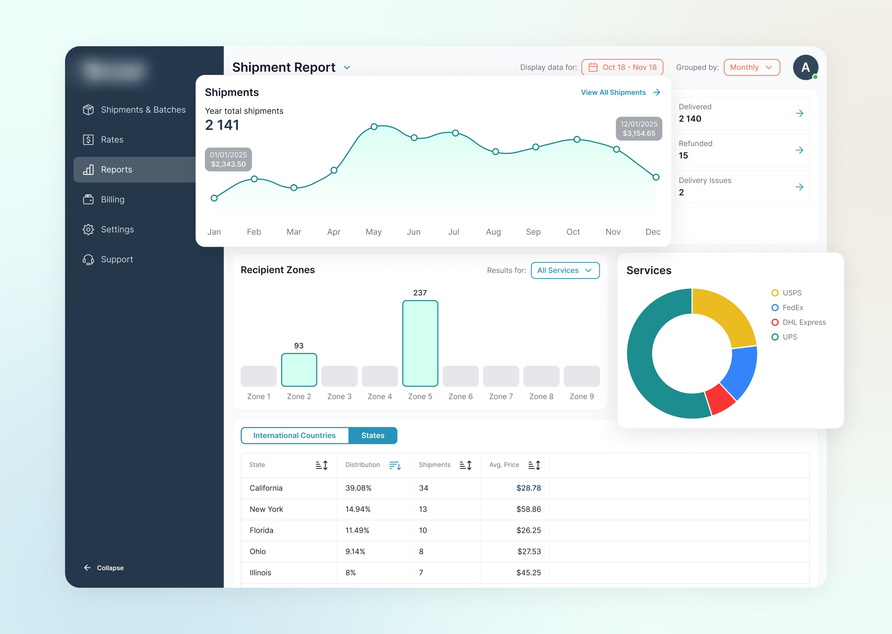
A web platform built to help small businesses and individual shippers manage deliveries, compare carrier rates, print labels, and track packages. The project focused on creating a simple, self‑service experience that supports quick actions and clear feedback.
Mind Mapping And Information Architecture
After competitor research and insights gathered from the business, we organised all entities into a mind map to understand the hierarchy and ensure no important details were missed. Later, we documented the information architecture to establish a clear structure.
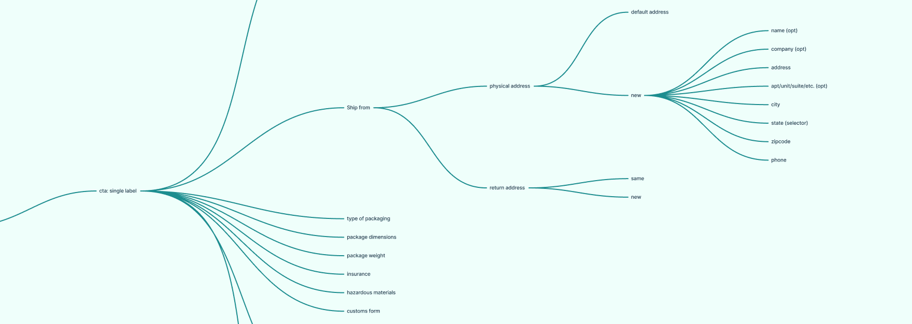
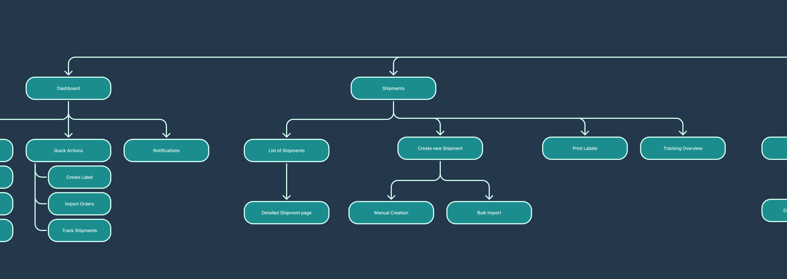
Shipments List
This page displays a table of all shipments, allowing users to view, sort, filter, and create orders, as well as generate labels and track statuses.
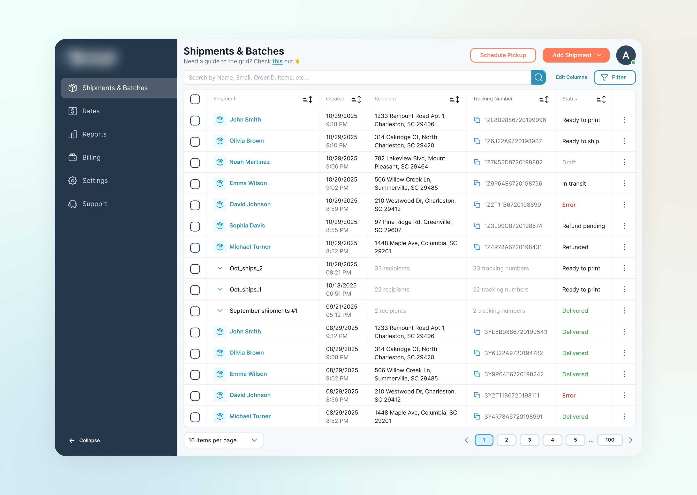
Shipment and batch
Batches group multiple shipments together for easier processing, label generation, and status tracking, while single shipments are individual orders created and managed one by one.
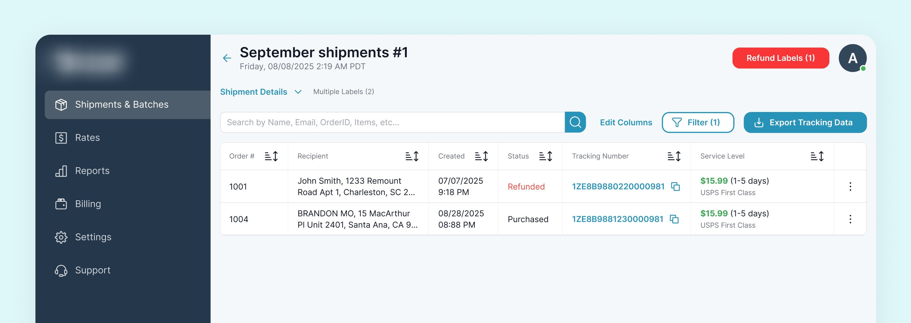
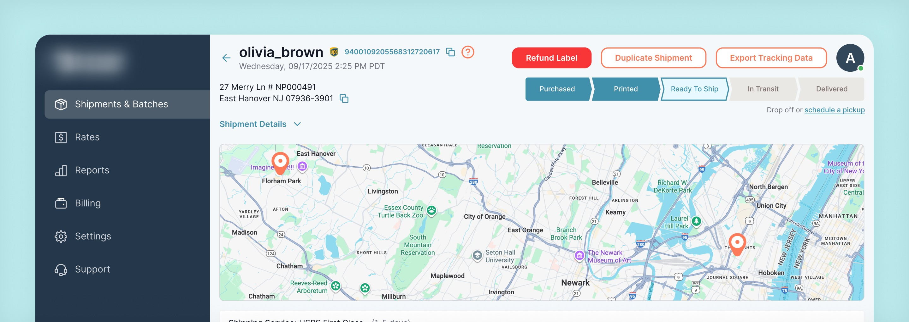
Key Flow – Batch shipment: References
By focusing our research on the Batch Shipments flow, we identified a user need that is not addressed in most competitor experiences – separate pricing selection for shipments within a batch. Since the business goal was to make the platform both easy to use and flexible, we decided to prioritise this flow.
Competitor 1: ShipStation
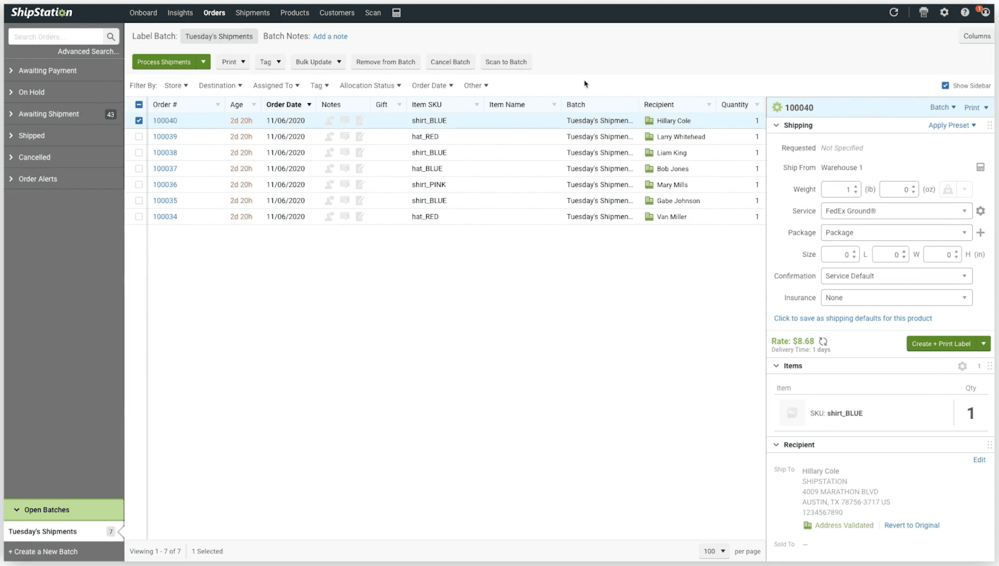
Competitor 2: OrderCup
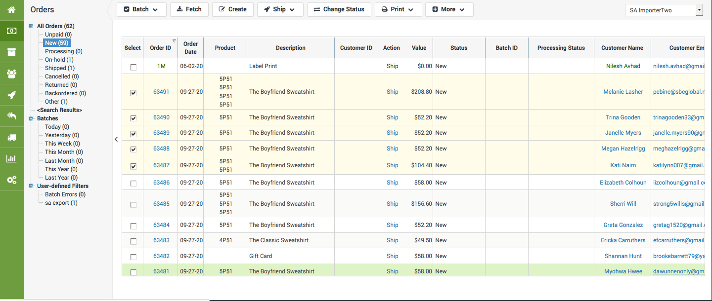
Key Flow – Batch shipment: User Flow Documentation
To better understand this flow, document it, and ensure we didn’t miss any interactions, we created a user flow diagram.
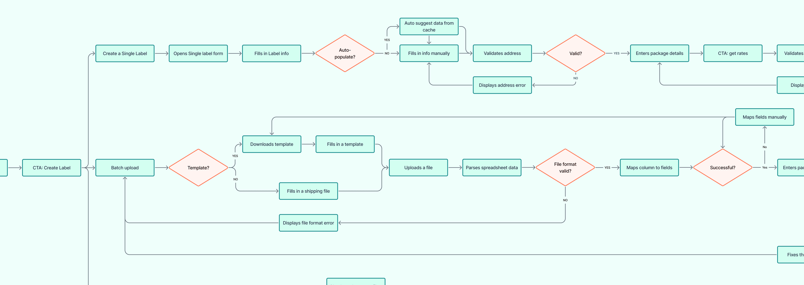
Key Flow – Batch shipment: Ideas Validation
By using a vibe coding tool, we were able to ideate and validate. After a few iterations, we considered key stakeholders feedback, which allowed us to come up with the best solution.
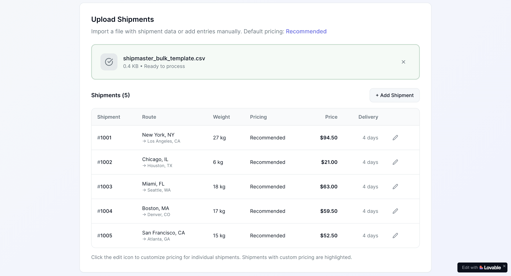
Key Flow – Batch shipment: Final Design
Flow allows user process a batch, which is a list of shipments.
Challenge
After analysing the user flow, it became obvious that users might want to select different service levels for shipments, which was not part of what functional competitors provided. So after brainstorming sessions we started AI-powered prototyping to validate our ideas – and found that we could allow users to pre-select a “default” service option for all shipments on the previous step, and change specific ones on the “Review” step.
Research shows that batching repetitive tasks can make workflows faster and easier by reducing unnecessary clicks and repeated actions. In one UX case study, introducing bulk actions reduced task completion time from 10 minutes to just 1–2 minutes. Source study
Create Label
The Create Label form allows users to generate shipping labels for single shipments or batches. You can select the carrier, package type, weight, and shipping options, and download the label.
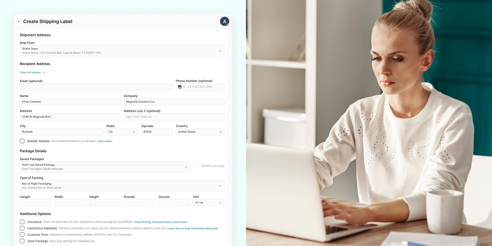
Integrations
Connecting external platforms like marketplaces, ERPs, and CRMs, enabling automatic import of orders and synchronization of shipment data.
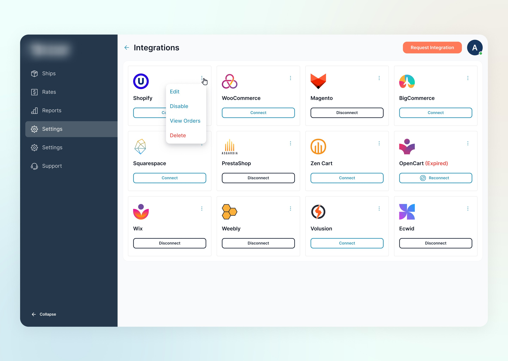